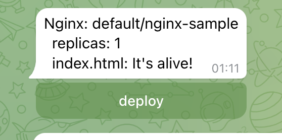

Operator
В данной практике опробуем работу operator-sdk на примере создания оператора на языке GO, который позволяет производить деплой приложения с конфигурацией(для простоты возьмем nginx) с запросом подтверждения операции.
Operator-SDK
Установка
Для работы потребуется утилита operator-sdk, установить ее можно используя
инструкцию с официального сайта или скачать со страницы релизов на github.
Для Windows рекомендуется использовать WSL для работы с operator-sdk, так как она предполагает
наличие утилит командной строки, таких как make, awk, sed, bash и т.д.
Инициализация
Создадим директорию для нового проекта и произведем инициализацию:
$ mkdir operator && cd operator
$ operator-sdk init --domain miit.ru --repo github.com/yudolevich/kube-dev-course/example/operator
Writing kustomize manifests for you to edit...
Writing scaffold for you to edit...
Get controller runtime:
go get sigs.k8s.io/controller-runtime@v0.13.0
Update dependencies:
go mod tidy
Next: define a resource with:
operator-sdk create api
В команде init мы указываем произвольный домен, который будет использоваться в кастомных ресурсах,
а также имя репозитория, который будет использоваться в go.mod.
Также сгенерируем код для структур апи и контроллера:
$ operator-sdk create api --group deploy --version v1alpha1 --kind Nginx --resource --controller
Writing kustomize manifests for you to edit...
Writing scaffold for you to edit...
api/v1alpha1/nginx_types.go
controllers/nginx_controller.go
Update dependencies:
go mod tidy
Running make:
make generate
Next: implement your new API and generate the manifests (e.g. CRDs,CRs) with:
make manifests
Таким образом мы инициализировали проект оператора, который будет обрабатывать ресурсы вида
<kind>.<group>.<domain>, то есть в нашем случае nginxes.deploy.miit.ru.
GO
На данном этапе у нас есть каркас проекта оператора на golang, теперь необходимо описать нашу структуру и логику ее обработки.
Custom Types
Структура нашего кастомного ресурса находится в файле api/v1alpha1/nginx_types.go:
// EDIT THIS FILE! THIS IS SCAFFOLDING FOR YOU TO OWN!
// NOTE: json tags are required. Any new fields you add must have json tags for the fields to be serialized.
// NginxSpec defines the desired state of Nginx
type NginxSpec struct {
// INSERT ADDITIONAL SPEC FIELDS - desired state of cluster
// Important: Run "make" to regenerate code after modifying this file
// Foo is an example field of Nginx. Edit nginx_types.go to remove/update
Foo string `json:"foo,omitempty"`
}
// NginxStatus defines the observed state of Nginx
type NginxStatus struct {
// INSERT ADDITIONAL STATUS FIELD - define observed state of cluster
// Important: Run "make" to regenerate code after modifying this file
}
Здесь нам сразу же предлагается отредактировать данную структуру, внеся необходимые нам поля,
а после запустить make для генерации кода. Добавим пару полей в NginxSpec: Replicas для задания
количества реплик в деплойменте и Index для указания текста, который должен выводить наш nginx.
Также в NginxStatus добавим индикатор подтверждения Approved, который будет сигнализировать о том,
что подтверждение получено:
type NginxSpec struct {
// INSERT ADDITIONAL SPEC FIELDS - desired state of cluster
// Important: Run "make" to regenerate code after modifying this file
Replicas int32 `json:"replicas,omitempty"`
Index string `json:"index"`
}
// NginxStatus defines the observed state of Nginx
type NginxStatus struct {
// INSERT ADDITIONAL STATUS FIELD - define observed state of cluster
// Important: Run "make" to regenerate code after modifying this file
Approved bool `json:"approved"`
}
Также мы указываем json теги, которые будут использовать для сериализации нашей структуры в json формат, который будет использоваться в нашем кастомном ресурсе при описании его в yaml формате.
После редактирования структуры для генерации необходимого кода и манифестов требуется запустить make:
$ make generate
bin/controller-gen object:headerFile="hack/boilerplate.go.txt" paths="./..."
$ make manifests
bin/controller-gen rbac:roleName=manager-role crd webhook paths="./..." output:crd:artifacts:config=config/crd/bases
Controllers
После инициализации operator-sdk создает директорию controllers, в которой генерирует код
контроллера controllers/nginx_controller.go, обрабатывающего наши кастомные ресурсы. Здесь создается
структура NginxReconciler и ее метод Reconcile, который будет вызываться при любых изменениях
нашего ресурса. Собственно ее нам сразу же и предлагается изменить:
// Reconcile is part of the main kubernetes reconciliation loop which aims to
// move the current state of the cluster closer to the desired state.
// TODO(user): Modify the Reconcile function to compare the state specified by
// the Nginx object against the actual cluster state, and then
// perform operations to make the cluster state reflect the state specified by
// the user.
//
// For more details, check Reconcile and its Result here:
// - https://pkg.go.dev/sigs.k8s.io/controller-runtime@v0.13.0/pkg/reconcile
func (r *NginxReconciler) Reconcile(ctx context.Context, req ctrl.Request) (ctrl.Result, error) {
_ = log.FromContext(ctx)
// TODO(user): your logic here
return ctrl.Result{}, nil
}
Nginx controller
Добавим следующую логику: при получении обновления мы запрашиваем текущее состояние ресурса методом
r.Get, после чего проверяем поле approved в статусе ресурса и, если оно не проставлено,
то прекращаем обработку, иначе производим деплой.
func (r *NginxReconciler) Reconcile(ctx context.Context, req ctrl.Request) (ctrl.Result, error) {
logger := log.FromContext(ctx)
nginx := &deployv1alpha1.Nginx{}
if err := r.Get(ctx, req.NamespacedName, nginx); err != nil {
if errors.IsNotFound(err) {
return ctrl.Result{}, nil
}
return ctrl.Result{}, err
}
logger.WithValues("name", nginx.GetName(), "namespace", nginx.GetNamespace())
logger.Info("reconicle")
if !nginx.Status.Approved {
// todo: send approve request
return ctrl.Result{}, nil
}
if err := r.deploy(ctx, nginx); err != nil {
logger.Error(err, "error deploy nginx")
return ctrl.Result{}, nil
}
return ctrl.Result{}, nil
}
Сам процесс деплоя можно описать отдельно:
func (r *NginxReconciler) deploy(ctx context.Context, nginx *deployv1alpha1.Nginx) error {
labels := map[string]string{"nginx": nginx.GetName()}
owner := metav1.OwnerReference{
APIVersion: nginx.APIVersion,
Kind: nginx.Kind,
UID: nginx.GetUID(),
Name: nginx.GetName(),
}
cm := &v1.ConfigMap{
ObjectMeta: metav1.ObjectMeta{
Name: nginx.GetName(),
Namespace: nginx.GetNamespace(),
Labels: labels,
OwnerReferences: []metav1.OwnerReference{owner},
},
Data: map[string]string{
"index.html": nginx.Spec.Index,
},
}
deploy := &appsv1.Deployment{
ObjectMeta: metav1.ObjectMeta{
Name: nginx.GetName(),
Namespace: nginx.GetNamespace(),
OwnerReferences: []metav1.OwnerReference{owner},
},
Spec: appsv1.DeploymentSpec{
Selector: &metav1.LabelSelector{MatchLabels: labels},
Replicas: &nginx.Spec.Replicas,
Template: v1.PodTemplateSpec{
ObjectMeta: metav1.ObjectMeta{Labels: labels},
Spec: v1.PodSpec{
Containers: []v1.Container{
{
Name: "nginx",
Image: "nginx",
VolumeMounts: []v1.VolumeMount{
{
Name: "index",
MountPath: "/usr/share/nginx/html",
},
},
},
},
Volumes: []v1.Volume{
{
Name: "index",
VolumeSource: v1.VolumeSource{
ConfigMap: &v1.ConfigMapVolumeSource{
LocalObjectReference: v1.LocalObjectReference{
Name: nginx.GetName(),
},
},
},
},
},
},
},
},
}
if err := r.apply(ctx, cm); err != nil {
return err
}
if err := r.apply(ctx, deploy); err != nil {
return err
}
return nil
}
func (r *NginxReconciler) apply(ctx context.Context, obj client.Object) error {
logger := log.FromContext(ctx)
if err := r.Get(ctx, client.ObjectKeyFromObject(obj), obj); err != nil {
if !errors.IsNotFound(err) {
return err
}
logger.Info("create")
if err := r.Create(ctx, obj); err != nil {
return err
}
return nil
}
logger.Info("update")
if err := r.Update(ctx, obj); err != nil {
return err
}
return nil
}
Здесь мы описываем структуры Deployment и ConfigMap также как мы это делали в yaml формате, но с
использованием golang, что дает нам дополнительную гибкость за счет возможностей полнофункционального
языка и удобство за счет работы в IDE или продвинутом текстовом редакторе с возможностью автодополнения
и подсвечивания ошибок. Как видно мы взяли параметры из нашего ресурса nginx, так что replicas
попало в Deployment, а index в ConfigMap, который монтируется в него. Также мы использовали поле
OwnerReference, таким образом при удалении нашего кастомного ресурса nginx также каскадно удалятся
все его дочерние ресурсы.
Осталось только описать логику для подтверждения деплоя.
Telegram
Для подтверждения деплоя предлагаю создать контроллер, который будет писать вам в telegram при
появлении нового ресурса nginx. Чтобы создать нового бота достаточно написать
t.me/botfather команду /newbot, он спросит вас имя и уникальный username
для бота и выдаст ссылку на него и токен, которым мы сможем воспользоваться в нашем операторе.
Также нам понадобится chat_id для отправки сообщений, для этого достаточно перейти в диалог с ботом
и нажать start, после чего выполнить в терминале:
$ token=<токен бота>
$ curl https://api.telegram.org/bot${token}/getUpdates
После чего вы получите json с сообщением /start, в котором в поле id будет указан идентификатор
диалога с ботом, которым мы и воспользуемся далее вместе с токеном.
Telegram controller
Для взаимодействия с telegram можно воспользоваться пакетом go-telegram-bot-api,
выполним команду go get:
$ go get -u github.com/go-telegram-bot-api/telegram-bot-api/v5
И создадим файл controllers/telegram_controller.go, в котором опишем структуру контроллера, функцию
создания нового контроллера и логику получения обновлений о новых сообщениях и проставление в статусе
нашего кастомного ресурса nginx поля approved:true. Также сделаем метод SendDeploy, который
будет отправляет сообщение о появлении нашего ресурса nginx в кластере.
Предупреждение
Данный код не предназначен для продуктивного использования и нужен лишь в целях обучения работы с operator-sdk.
package controllers
import (
"context"
"fmt"
"strings"
tgbotapi "github.com/go-telegram-bot-api/telegram-bot-api/v5"
"github.com/yudolevich/kube-dev-course/example/operator/api/v1alpha1"
v1 "k8s.io/apimachinery/pkg/apis/meta/v1"
"k8s.io/apimachinery/pkg/types"
"sigs.k8s.io/controller-runtime/pkg/client"
)
type TBot struct {
*tgbotapi.BotAPI
kube client.Client
uid int64
}
func NewTBot(token string, uid int64, client client.Client) (*TBot, error) {
bot, err := tgbotapi.NewBotAPI(token)
if err != nil {
return nil, err
}
return &TBot{BotAPI: bot, uid: uid, kube: client}, nil
}
func (b *TBot) Start(ctx context.Context) error {
for update := range b.GetUpdatesChan(tgbotapi.NewUpdate(0)) {
if update.CallbackQuery == nil {
continue
}
name := strings.Split(update.CallbackQuery.Data, "/")
if len(name) != 2 {
continue
}
b.kube.Status().Patch(ctx, &v1alpha1.Nginx{
ObjectMeta: v1.ObjectMeta{Name: name[1], Namespace: name[0]},
}, client.RawPatch(types.MergePatchType, []byte(`{"status":{"approved": true}}`)),
)
}
return nil
}
func (b *TBot) SendDeploy(nginx *v1alpha1.Nginx) {
msg := tgbotapi.NewMessage(
b.uid,
fmt.Sprintf(`Nginx: %s/%s
replicas: %d
index.html: %s`,
nginx.GetNamespace(), nginx.GetName(),
nginx.Spec.Replicas, nginx.Spec.Index),
)
msg.ReplyMarkup = tgbotapi.NewInlineKeyboardMarkup(
tgbotapi.NewInlineKeyboardRow(
tgbotapi.NewInlineKeyboardButtonData(
"deploy",
fmt.Sprintf("%s/%s", nginx.GetNamespace(), nginx.GetName()),
),
),
)
b.Send(msg)
}
Теперь добавим в nginx_controller.go отправку сообщения в telegram там где мы оставили todo
комментарий, также расширив структуру нашего NginxReconciler:
// NginxReconciler reconciles a Nginx object
type NginxReconciler struct {
client.Client
Tbot *TBot
Scheme *runtime.Scheme
}
...
logger.Info("reconicle")
if !nginx.Status.Approved {
r.Tbot.SendDeploy(nginx)
return ctrl.Result{}, nil
}
Осталось лишь дописать инициализацию нашего приложения в main.go, для этого
добавим в него создание TBot контроллера и добавление его в Manager и NginxReconciler:
chatid, err := strconv.ParseInt(os.Getenv("TELEGRAM_CHATID"), 10, 64)
if err != nil {
setupLog.Error(err, "error parse chatid")
os.Exit(1)
}
tbot, err := controllers.NewTBot(os.Getenv("TELEGRAM_APITOKEN"), chatid, mgr.GetClient())
if err != nil {
setupLog.Error(err, "unable to create telegram bot controller")
os.Exit(1)
}
if err = (&controllers.NginxReconciler{
Client: mgr.GetClient(),
Scheme: mgr.GetScheme(),
Tbot: tbot,
}).SetupWithManager(mgr); err != nil {
setupLog.Error(err, "unable to create controller", "controller", "Nginx")
os.Exit(1)
}
//+kubebuilder:scaffold:builder
if err := mgr.Add(tbot); err != nil {
setupLog.Error(err, "unable to add telegram bot controller to manager")
os.Exit(1)
}
Build & Deploy
На всякий случай повторим генерацию кода и манифестов, а также сделаем проверку зависимостей и запустим сборку:
$ make generate
bin/controller-gen object:headerFile="hack/boilerplate.go.txt" paths="./..."
$ make manifests
bin/controller-gen rbac:roleName=manager-role crd webhook paths="./..." output:crd:artifacts:config=config/crd/bases
$ go mod tidy
$ make docker-build
...
Step 16/16 : ENTRYPOINT ["/manager"]
---> Running in a396e3faa2fa
Removing intermediate container a396e3faa2fa
---> 22229db80f19
Successfully built 22229db80f19
Successfully tagged controller:latest
Перед деплоем необходимо внести пару изменений в манифесты, так как мы используем переменные среды и
также запретим загрузку образа из внешних источников, для этого приведем файл
config/default/manager_config_patch.yaml к следующему виду:
apiVersion: apps/v1
kind: Deployment
metadata:
name: controller-manager
namespace: system
spec:
template:
spec:
containers:
- name: manager
imagePullPolicy: Never
env:
- name: "TELEGRAM_CHATID"
value: "<chat id>"
- name: "TELEGRAM_APITOKEN"
value: "<bot token>"
Указав свои chat id и bot token, и добавим строку в файл config/default/kustomization.yaml в блок
patchesStrategicMerge, приведя его к виду:
patchesStrategicMerge:
# Protect the /metrics endpoint by putting it behind auth.
# If you want your controller-manager to expose the /metrics
# endpoint w/o any authn/z, please comment the following line.
- manager_auth_proxy_patch.yaml
- manager_config_patch.yaml
Также необходимы права на взаимодействие с ресурсами Deployment и ConfigMap нашему оператору, для
этого создадим кластерную роль и биндинг config/rbac/role-deploy.yaml:
---
apiVersion: rbac.authorization.k8s.io/v1
kind: ClusterRole
metadata:
creationTimestamp: null
name: manager-role-deploy
rules:
- apiGroups:
- ""
resources:
- configmaps
verbs:
- create
- delete
- get
- list
- patch
- update
- watch
- apiGroups:
- apps
resources:
- deployments
verbs:
- create
- delete
- get
- list
- patch
- update
- watch
---
apiVersion: rbac.authorization.k8s.io/v1
kind: ClusterRoleBinding
metadata:
name: manager-rolebinding-deploy
roleRef:
apiGroup: rbac.authorization.k8s.io
kind: ClusterRole
name: manager-role-deploy
subjects:
- kind: ServiceAccount
name: controller-manager
namespace: system
Также необходимо указать этот файл в config/rbac/kustomization.yaml:
- service_account.yaml
- role.yaml
- role_binding.yaml
- leader_election_role.yaml
- leader_election_role_binding.yaml
- auth_proxy_service.yaml
- auth_proxy_role.yaml
- auth_proxy_role_binding.yaml
- auth_proxy_client_clusterrole.yaml
- role-deploy.yaml
Осталось лишь загрузить образ в кластер и выполнить деплой:
$ kind load docker-image controller
Image: "" with ID "sha256:22229db80f19bba9f657e7095bc8da00b10b8d221b4ba7e60e83dafe0c087f9c" not yet present on node "kind-control-plane", loading...
$ make deploy
namespace/operator-system created
customresourcedefinition.apiextensions.k8s.io/nginxes.deploy.miit.ru created
serviceaccount/operator-controller-manager created
role.rbac.authorization.k8s.io/operator-leader-election-role created
clusterrole.rbac.authorization.k8s.io/operator-manager-role created
clusterrole.rbac.authorization.k8s.io/operator-manager-role-deploy created
clusterrole.rbac.authorization.k8s.io/operator-metrics-reader created
clusterrole.rbac.authorization.k8s.io/operator-proxy-role created
rolebinding.rbac.authorization.k8s.io/operator-leader-election-rolebinding created
clusterrolebinding.rbac.authorization.k8s.io/operator-manager-rolebinding created
clusterrolebinding.rbac.authorization.k8s.io/operator-manager-rolebinding-deploy created
clusterrolebinding.rbac.authorization.k8s.io/operator-proxy-rolebinding created
service/operator-controller-manager-metrics-service created
deployment.apps/operator-controller-manager created
$ kubectl get po -n operator-system
NAME READY STATUS RESTARTS AGE
operator-controller-manager-6798bdbdbd-n2cqt 2/2 Running 0 5m50s
Run
Создадим наш кастомный ресурс типа nginxes.deploy.miit.ru:
$ kubectl create -f - <<EOF
apiVersion: deploy.miit.ru/v1alpha1
kind: Nginx
metadata:
labels:
name: nginx-sample
spec:
replicas: 1
index: |
It's alive!
EOF
nginx.deploy.miit.ru/nginx-sample created
После чего оператор должен отправить вам сообщение: 
Если на текущий момент посмотреть в проекте, то никаких подов создано не будет:
$ kubectl get po
No resources found in default namespace.
После же нажатия на кнопку deploy в сообщении - оператор подтвердит создание ресурсов в кластере и
под будет создан, при запросе к нему можно убедиться, что значение index.html взято из нашего ресурса:
$ kubectl get po
NAME READY STATUS RESTARTS AGE
nginx-sample-6b79c55d84-j6j62 1/1 Running 0 4s
$ kubectl get --raw /api/v1/namespaces/default/pods/$(k get po -o name | cut -d/ -f2)/proxy
It's alive!
После удаления нашего ресурса nginx также каскадно удалятся Deploy, Pod и ConfigMap:
$ kubectl delete nginx nginx-sample
nginx.deploy.miit.ru "nginx-sample" deleted
$ kubectl get po
No resources found in default namespace.
Пример кода из данной практики можно посмотреть по ссылке.